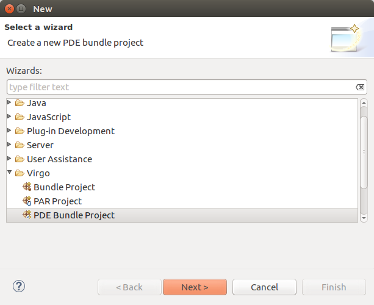
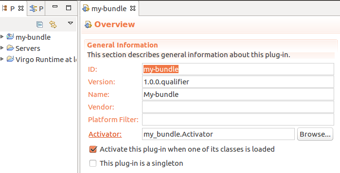

Now that the Virgo Runtime Environment has been properly setup in the Eclipse workspace, including the corresponding PDE Target Platform definition, it's finally possible to create new projects.
The Virgo Tools require PDE Plug-in projects to be augmented with some additional features to be usable. As such, in order to create a new project it is necessary to use the dedicated wizard named PDE Bundle project located within the Virgo category:

The above wizard is the standard PDE Plug-in project wizard with some choices disabled or defaulted. In addition to the usual pages it includes an extra page where the user can optionally specify a Web context root. If a context root is specified the new project will be a Web Application bundle (WAB). If the context root is not specified the new project will be a regular OSGi bundle.
